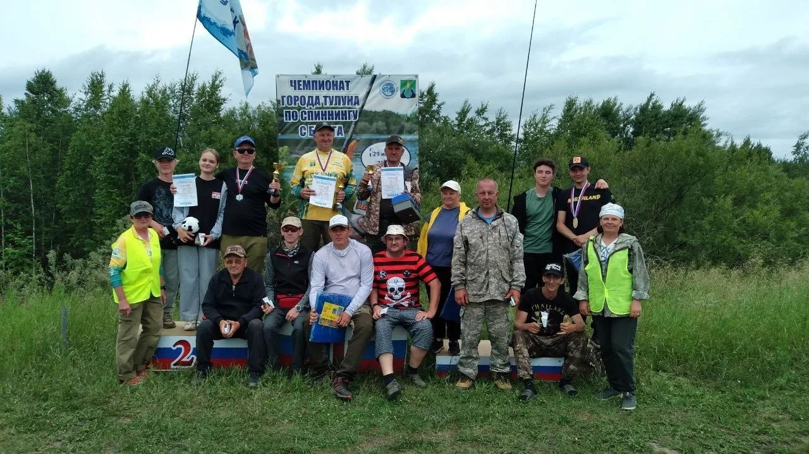

Официальная дисциплина, где спортсмены используют спиннинговые снасти для точных забросов в пределах своего сектора. Ключевые особенности — строгие ограничения зоны ловли и система подсчёта очков.

Фото с соревнований по ловле на спиннинг
Каждая рыба даёт 1 балл. Победитель определяется по наименьшей сумме мест за два тура. Обычно тур длится около 3 часов.
В России проводятся Кубок России и региональные турниры. На международной арене популярны чемпионаты мира по City Fishing. В 2026 году ЧМ принимала Италия.